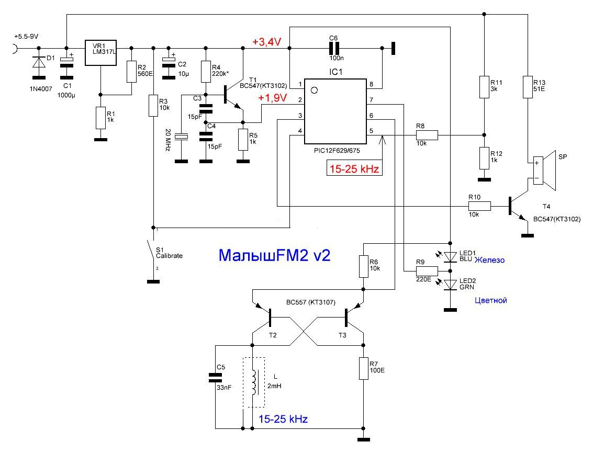
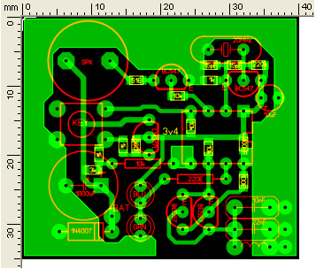

Прежде чем приступить к сборке металлоискателя предлагаю ознакомиться с электрической схемой, представленной на рисунке.
Прибор собран на PIC-контроллере 12F629. Перед тем как впаивать контролер в плату его необходимо прошить. Файл для прошивки доступен по ссылке СКАЧАТЬ.
Печатную плату изготавливаем по методу лазерно-утюжной технологии (ЛУТ) файл для скачивания будет доступен по ссылке СКАЧАТЬ. Печатная плата очень компактна.
Все элементы необходимые для монтажа вы с легкостью сможете приобрести в радиомагазине. Полный список с наименованием элементов доступен по ссылке СКАЧАТЬ.
Монтаж элементов необходимо начинать с установки SMD элементов, затем панелька под контроллер, выводы динамика и питания. От аккуратности и качества проведенных работ зависит дальнейшая работа прибора. После монтажа плату необходимо тщательно промыть от канифоли.
При включении или нажатии кнопки калибровки звучит сигнал
--"фьють" – калибровка прошла успешно;
--длительный гудок и один короткий писк - частота занижена;
--два коротких сигналов - частота завышена;
--три коротких сигнала - частота нестабильна;
--сигнал включения с паузой в 2-3 секунды, а сигнала ошибки нет – генератор не работает.